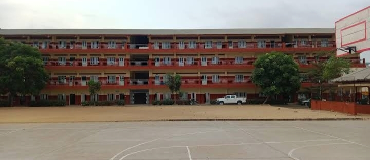
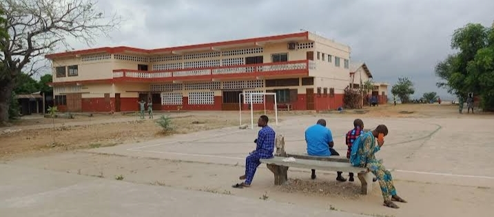
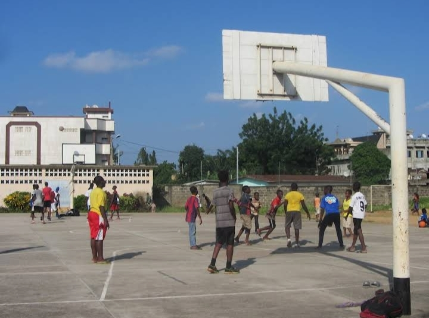

Bienvenue à notre école. Nos infrastructures modernes et bien équipées offrent un environnement propice à l'apprentissage et au développement personnel.
Galerie d'Images
  Caractéristiques Principales
Notre lycée catholique offre un cadre éducatif privilégié, où infrastructures modernes et valeurs humaines se conjuguent pour accompagner nos élèves dans leur parcours scolaire et personnel. Ici, nous cultivons un environnement accueillant, propice au développement intellectuel, physique et spirituel, tout en veillant à répondre aux besoins variés de chaque étudiant.
- Laboratoires bien équipés : Nos laboratoires de sciences physiques, chimiques et biologiques constituent des espaces d’apprentissage pratiques, où les élèves peuvent expérimenter, approfondir leurs connaissances et développer leur esprit scientifique. Chaque équipement est soigneusement choisi pour garantir une expérience d’étude sûre et stimulante.
- Deux bâtiments distincts pour les cours : Afin de favoriser une organisation optimale et d’assurer un cadre adapté à chaque niveau, notre lycée dispose de deux bâtiments dédiés : l’un réservé aux classes de seconde et l’autre aux premières et terminales. Cette disposition permet de créer un environnement académique harmonieux et adapté à l’évolution pédagogique de nos élèves.
- Une cantine accueillante : La cantine est bien plus qu’un lieu de restauration ; c’est un espace de convivialité où les élèves se retrouvent pour partager des repas équilibrés dans une ambiance chaleureuse. Des plats variés, répondant aux besoins nutritionnels des adolescents, sont préparés avec soin, garantissant leur bien-être et leur santé.
- Des installations sportives étendues : Nos infrastructures sportives témoignent de l’importance que nous accordons au développement physique de nos élèves. Le lycée offre un terrain de basket, idéal pour les amateurs de sport collectif, ainsi qu’un grand terrain de football qui accueille régulièrement des activités sportives et des tournois, renforçant l’esprit d’équipe et la camaraderie.
- Un cadre propice à la spiritualité et au partage : En tant que lycée catholique, nous mettons un point d’honneur à offrir à nos élèves un lieu où leur développement spirituel est encouragé. Les élèves peuvent trouver des moments de recueillement dans la chapelle, participer à des célébrations religieuses et vivre des valeurs qui les guident dans leur cheminement personnel.
- Un espace de vie scolaire harmonieux : Notre établissement est conçu pour favoriser les échanges, le partage et le respect mutuel. Des zones de détente, des espaces de travail collectif et des lieux adaptés aux activités parascolaires contribuent à créer une atmosphère équilibrée et enrichissante pour chaque élève.
Salles de Classe Modernes
Des salles de classe équipées des dernières technologies.

Installations Sportives
Des installations sportives pour encourager l'activité physique.
Ainsi, ces infrastructures représentent le cœur de nos opérations, garantissant fiabilité, efficacité et innovation pour répondre aux besoins présents et futurs.